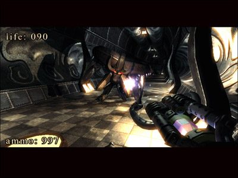
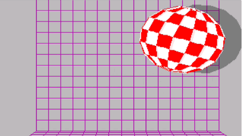
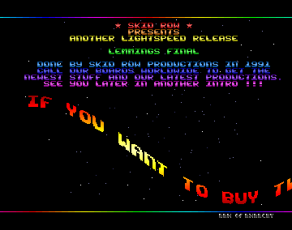
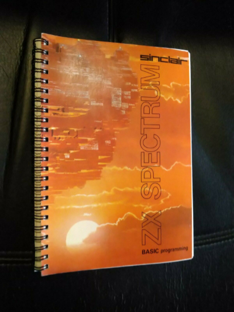

Introdução a Demoscene
Uma explicação muito resumida sobre esta cultura!
Associação Inércia https://inercia.pt
É a cultura da criação de arte em tempo real pela história da computação caseira.
Demo |
Scene |
|
Abreviação de demonstração, que exibe o que os utilizadores conseguem fazer com o computador. |
É todo o panomara, as pessoas, a historia, o drama e os eventos internacionais anuais. |
O que são demos?
São aplicações, na maior parte, não interativas, que demostram a habilidade artística de um grupo de pessoas.
São o resultado do trabalho de programadores, músicos, pintores digitais, modeladores 3D, fotógrafos e editores de video, para criar uma curta animação.
Criação de arte sem fins lucrativos, independente de conteúdo comercial e em geral sobre alçada Creactive Commons.
Demonstrar o que? (Parte 1)
|
.kkrieger por .theprodukkt Jogo para Windows em 96KB apenas! |
 |
Uma aplicação interativa em que todos os recursos são gerados pelo próprio código, é uma demonstração do engenho dos seus criadores em colocar tudo numa pequena aplicação.
Demonstrar o que? (Parte 2)
|
Bouncing Ball por Commodore International Amiga 1000 |
 |
Tech-demo para demonstração das capacidades de multi-tasking do computador, que para a altura não exista em hardware para consumidores.
Demonstrar o que? (Parte 3)
|
Lemmings por Anarchy e Skid Row Commodore Amiga |
 |
Crack que permitia executar as cópias não oficiais do jogo, também possuia música e gráficos animados a gabar o feito do grupo.
Demonstrar o que? (Parte 4)
|
Programação em Basic Spectrum ZX Quem teve a experiência de aprender a programar com o livro destes, em algum ponto quis mostrar o que fez a alguém. |
 |
Plataformas da Demoscene (8bit)
Consolas de jogos e computadores com recursos limitados, que não possuiam mais de 16 cores e resoluções muito baixas, funcionam em geral ligados ao ecrã da TV com moduladores.
| Ano | Ram | Resolução | Cores/Tons | |
| ZX Spectrum | 1982 | 16KB | 256 x 162 | 15 |
| Commodore 64 | 1982 | 64KB | 320 x 200 | 16 |
| Gameboy | 1989 | 8KB | 160 x 144 | 4 |
| Gejmbåj | aeon | Edge of Disgrace |
 |
 |
 |
| 2010 | 2008 | 2008 |
Plataformas da Demoscene (16bit)
Inicio da computação caseira com capacidades mais evoluidas e consolas de jogos também mais sofisticadas.
| Ano | Ram | Resolução | Cores/Tons | |
| Amiga 500 | 1985 | 512KB | 368×567 | 6bpp |
| Megadrive | 1991 | 64KB | 256×240 | 61 cores |
| MSDOS | 1989 | 1MB |
| EON | Overdrive | Second Reality |
 |
 |
 |
| 2019 | 2013 | 1993 |
Pirataria Informática
|
Na década dos anos 80 era comum a produção de cracks para copiar software Os cracks tinham também uma vertente artistica, como se tratassem grafíti digitais Estes programas possuiam gráficos animados, efeitos e música únicos |
 
|
BBS
Ou Bulletin Board System, são os predecessor de foruns e redes sociais
Terminais remotos acessiveis por dial-up
Informação era transmitida por caracteres ASCII ou ANSI art para superar limites da ligação.
Com a melhoria das ligações tornou-se possivel partilhar ficheiros.
Copy Parties
Predecessores das demoparties
Eventos onde as pessoas se juntavam para trocar copias do software
Após intervenção da policia terminaram, mas a ideia permaneceu.
Demoparty
Eventos públicos que decorrem em vários paises anualmente
Participação internacional
Competições & Concertos ao vivo & Apresentações
Visualização de produções de anos anteriores
Muita diversão, histórias da industria, show-off de projectos pessoais e novos amigos!